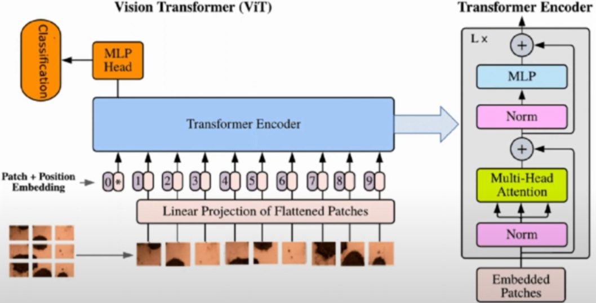
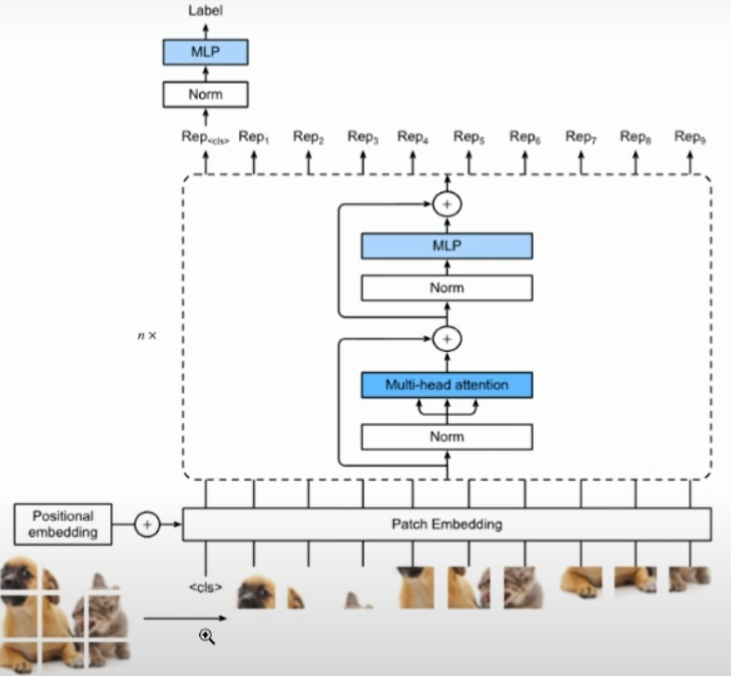
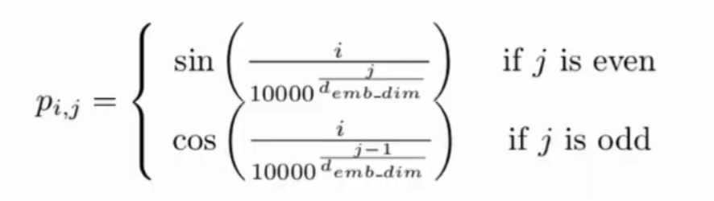

import numpy as np
from tqdm import tqdm
import torch
import torch.nn as nn
import torch.optim as optim
from torch.utils.data import DataLoader
from torchvision.datasets import MNIST
from torchvision.transforms import ToTensor
from torch.nn import CrossEntropyLoss
import pdb
np.random.seed(0)
torch.manual_seed(0)
_device_ = 'cuda:1' if torch.cuda.is_available() else 'cpu'Vision Transformer Implementation from Scratch
Computer Vision
Deep Learning
Pytorch
Vision Transformer
Custom Implemenation of Vison Trasformer from Scratch for Image Classification using Pytorch.
Image 1: Architecture of ViT |
Image 2: Architecture of ViT for Classification |
The idea of patch embedding is to divide the images into patches and then later flatten them to a one dimensional vector before feeding it to the model. Traditionally tramsformers are made to work with sequence of words, thus patch embedding allow us to sequencify the images.
def patch_embedding(images, n_patch = 7): # n_patch = 7 means 7x7 grid of patches, so there will be 49 patches (note, image size is 28x28)
n, c, h, w = images.shape # for MNIST, n = n (number of images), c = 1 (channels), h = 28 (height), w = 28 (width)
assert h == w, 'Input image should be square'
patches = torch.zeros(n, n_patch ** 2, h * w * c // n_patch ** 2) # (N, 49, 16) holds all the patches for all the images
# 28 * 28 * 1 / 7 * 7 = 16 pixels per patch
patch_size = h // n_patch # 28 / 7 = 4
for idx, image in enumerate(images): # ennumerate over the images
for i in range(n_patch): # iterate over the patches
for j in range(n_patch): # iterate over the patches
patch = image[:, i * patch_size: (i + 1) * patch_size, j * patch_size: (j + 1) * patch_size] # get the patch, (1, 4, 4)
patches[idx, i * n_patch + j] = patch.flatten() # flatten the patch and assign it to the patches tensor
return patches # N x 49 x 16
Image 3: Equation for posistional encodeing |
def positional_encoding(sequence_length, d): # 50, 8
result = torch.ones(sequence_length, d) # 50 x 8
for i in range(sequence_length):
for j in range(d):
# the equation comes form the paper, depicted in the Image 3
result[i][j] = np.sin(i / (10000 ** (j / d))) if j % 2 == 0 else np.cos(i / (10000 ** (j / d)))
return result # 50 x 8class MultiHeadAttention(nn.Module):
def __init__(self, d, n_heads = 2): # we have 8 dimensional vectors and 2 heads
super().__init__()
self.d = d # d is the dimension
self.n_heads = n_heads # n_heads is the number of heads
assert d % n_heads == 0, 'd should be divisible by n_heads'
self.d_head = d // n_heads # 8 / 2 = 4
self.q = nn.ModuleList([nn.Linear(self.d_head, self.d_head) for _ in range(self.n_heads)]) # [(4, 4), (4, 4)] => multi-heads
self.k = nn.ModuleList([nn.Linear(self.d_head, self.d_head) for _ in range(self.n_heads)]) # [(4, 4), (4, 4)] => multi-heads
self.v = nn.ModuleList([nn.Linear(self.d_head, self.d_head) for _ in range(self.n_heads)]) # [(4, 4), (4, 4)] => multi-heads
self.softmax = nn.Softmax(dim = -1)
def forward(self, sequences):
# N, seq_len, token_dim => N, 50, 8
# Each patch will have its own k, q, v
# Now each patch has a dimension 8, and we apply them across two heads, thus we do it twice with 4 dimensions each
results = []
for sequence in sequences:
seq_result = []
for head in range(self.n_heads): # 0, 1, or 2 (assuming n_heads is 3 for this example)
q_mapping = self.q[head]
k_mapping = self.k[head]
v_mapping = self.v[head]
# We take the first d_head dimensions and the next d_head dimensions in the next iteration
seq = sequence[:, head * self.d_head : (head + 1) * self.d_head] # [0: 4], [4: 8]
# We multiply the sequence with the q, k, v matrices
q = q_mapping(seq)
k = k_mapping(seq)
v = v_mapping(seq)
# Compute attention scores
attention = self.softmax(torch.matmul(q, k.transpose(-2, -1)) / np.sqrt(self.d_head)) # (batch_size, seq_len, seq_len)
# Apply attention to the value matrix
attended_seq = torch.matmul(attention, v) # (batch_size, seq_len, d_head)
seq_result.append(attended_seq) # append the result of the current head
# Concatenate the results of the heads along the last dimension
results.append(torch.hstack(seq_result)) # (batch_size, seq_len, d_model)
# Concatenate the results of the sequences along the batch dimension
return torch.cat([torch.unsqueeze(r, dim=0) for r in results], dim=0) # (total_sequences, batch_size, seq_len, d_model)class EncoderVIT(nn.Module):
def __init__(self, hidden_d, n_heads, mlp_ratio = 4):
super().__init__()
self.hidden_d = hidden_d
self.n_heads = n_heads
self.mlp_ratio = mlp_ratio
# here we are following the flow mentioned in image 1, norm -> mha -> norm -> mlp
self.norm1 = nn.LayerNorm(hidden_d)
self.mha = MultiHeadAttention(hidden_d, n_heads)
self.norm2 = nn.LayerNorm(hidden_d)
self.mlp = nn.Sequential(
nn.Linear(hidden_d, hidden_d * mlp_ratio),
nn.GELU(),
nn.Linear(hidden_d * mlp_ratio, hidden_d)
)
def forward(self, x):
out1 = self.norm1(x) # 32 x 50 x 8
out1 = self.mha(out1) # 32 x 50 x 8
out1 = x + out1 # adding the x will do the residual connection as shown in image 1 # 32 x 50 x 8
out2 = self.norm2(out1)
out2 = self.mlp(out2)
out2 = out1 + out2
# # A compact way to fo the exact same thing is given below
# out = x + self.mha(self.norm1(x))
# out = out + self.mlp(self.norm2(out))
return out2class VIT(nn.Module):
def __init__(self, channel = 1, height = 28, width = 28, n_patch = 7, n_blocks = 2, hidden_d = 8, n_heads = 2, out_dim = 10):
super().__init__()
self.channel = channel
self.height = height
self.width = width
self.n_patch = n_patch
self.hidden_d = hidden_d
self.n_blocks = n_blocks
self.n_heads = n_heads
assert height == width, 'Input image should be square'
assert height % n_patch == 0, 'n_patch should be a factor of height'
self.patch_size = (height // n_patch, width // n_patch) # (4, 4)
# linear mapping of the patches
self.input_d = int(channel * self.patch_size[0] * self.patch_size[1]) # 1 * 4 * 4 = 16
self.linear_mapper = nn.Linear(self.input_d, self.hidden_d) # 16 -> 8
# learnable class token
self.class_token = nn.Parameter(torch.randn(1, self.hidden_d)) # 1 x 8
# positional embedding
self.pos_embed = nn.Parameter(torch.zeros((self.n_patch ** 2 + 1, self.hidden_d))) # 50 x 8
self.pos_embed.requires_grad = False
# In image 1, we see the encoder block is repeated n times, here we are repeating it 2 times
# Encoder block
self.blocks = nn.ModuleList(
[
EncoderVIT(self.hidden_d, self.n_heads) for _ in range(self.n_blocks)
]
)
# we just need a final MLP layer to get the output
self.mlp = nn.Sequential(
nn.Linear(self.hidden_d, out_dim),
nn.Softmax(dim = -1)
)
def forward(self, images):
n, c, h, w = images.shape
# we get the patches
patches = patch_embedding(images, self.n_patch) # N x 49 x 16
# in image 1, we see the patches get passed through a linear projection which outputs an eight dimnsional vector, the next line does the exact same thing
# performing a linear projection on the patches
tokens = self.linear_mapper(patches.to(device=_device_)) # N x 49 x 8
# in image 2, we see along with the patches there is a <cls> token which is passed with each image, thus for each image we need to append a classification
# token, the next line does the exact same thing
# adding the class token to the tokens
tokens = torch.stack([torch.vstack((self.class_token, token)) for token in tokens]) # N x 50 x 8
# in image 2, we see the positional encoding is added to the tokens, the next line does the exact same thing
# adding the positional embedding to the tokens
pos_embed = self.pos_embed.repeat(n, 1, 1) # N x 50 x 8
# in image 1, we see the tokens and positional encoding are added together, the next line does the exact same thing
out = tokens + pos_embed
# transformer block
for block in self.blocks:
out = block(out)
# apply the final MLP layer only in the classification token, for that we need to extract the classification token
cls_token = out[:, 0] # 1 x 8
return self.mlp(cls_token) # 1 x 10Now since everything is set, we define the training loop
def train():
transform = ToTensor()
train_set = MNIST(root = './data', train = True, download = True, transform = transform)
test_set = MNIST(root = './data', train = False, download = True, transform = transform)
train_loader = DataLoader(train_set, batch_size = 32, shuffle = True)
test_loader = DataLoader(test_set, batch_size = 32, shuffle = False)
device = _device_
model = VIT(channel=1, height=28, width=28, n_patch=7, n_blocks=2, hidden_d=8, n_heads=2, out_dim=10).to(device)
n_epochs = 2
lr = 0.005
optimizer = optim.Adam(model.parameters(), lr = lr)
criterion = CrossEntropyLoss()
# training loop
for epoch in range(n_epochs):
train_loss = 0.0
for batch in tqdm(train_loader, desc=f"Epoch {epoch + 1}/{n_epochs} - Training"):
images, labels = batch
images, labels = images.to(device), labels.to(device)
y_hat = model(images)
loss = criterion(y_hat, labels)
optimizer.zero_grad()
loss.backward()
optimizer.step()
train_loss += loss.detach().cpu().item() / len(train_loader)
print(f"Epoch {epoch + 1}/{n_epochs} - Training loss: {train_loss}")
# testing loop
with torch.no_grad():
correct = 0
total = 0
for batch in tqdm(test_loader, desc=f"Epoch {epoch + 1}/{n_epochs} - Testing"):
images, labels = batch
images, labels = images.to(device), labels.to(device)
y_hat = model(images)
_, predicted = torch.max(y_hat, 1)
total += labels.size(0)
correct += (predicted == labels).sum().item()
print(f"Epoch {epoch + 1}/{n_epochs} - Testing accuracy: {correct / total}")if __name__ == '__main__':
train()Epoch 1/2 - Training: 100%|██████████| 1875/1875 [04:29<00:00, 6.97it/s]
Epoch 2/2 - Training: 100%|██████████| 1875/1875 [04:30<00:00, 6.94it/s]
Epoch 2/2 - Testing: 100%|██████████| 313/313 [00:21<00:00, 14.52it/s]Epoch 1/2 - Training loss: 2.1409480080922405
Epoch 2/2 - Training loss: 2.093113217480978
Epoch 2/2 - Testing accuracy: 0.3824